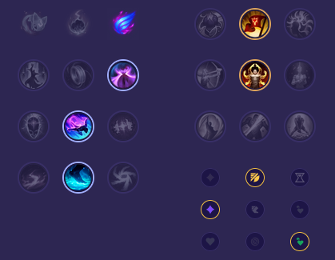

Starter: 🔵 Pisklę Podmuszka Core Bulid: Udręka Liandriego Pancerniaki Mroźne Serce Full Bulid: Kaeniczna Powłoka Kolczasta Kolczuga Omen Randuina

Słaby przeciwko: - Jarvan IV - Briar - Elise - Kha'Zix - Hecarim - Rengar Dobry przeciwko: - Viego - Ekko - Graves - Nocturne - Dr. Mundo - Trundle